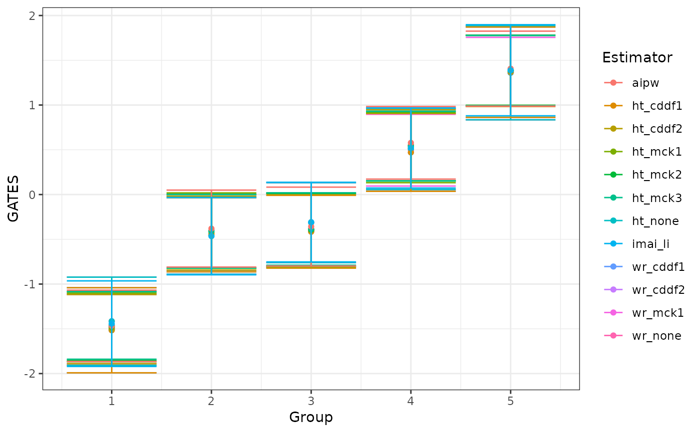
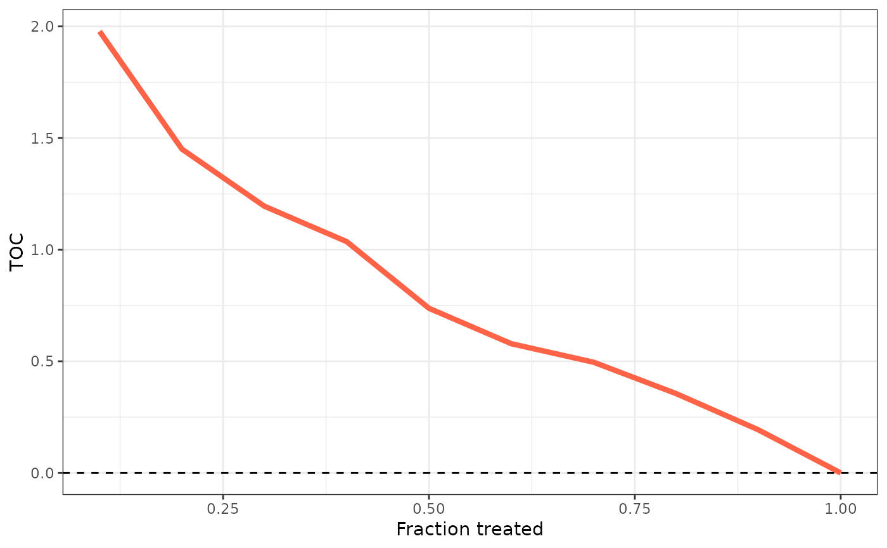

plot.evaluCATE.RdPlots an evaluCATE object.
# S3 method for evaluCATE
plot(x, target = "GATES", ...)An evaluCATE object.
String controlling which plot to display. Must be either "GATES" or "TOC".
Further arguments passed to or from other methods.
Plots an evaluCATE object.
## Generate data.
set.seed(1986)
n <- 1000
k <- 2
X <- matrix(rnorm(n * k), ncol = k)
colnames(X) <- paste0("x", seq_len(k))
D <- rbinom(n, size = 1, prob = 0.5)
mu0 <- 0.5 * X[, 1]
mu1 <- 0.5 * X[, 1] + X[, 2]
Y <- mu0 + D * (mu1 - mu0) + rnorm(n)
## Sample split.
train_idx <- sample(c(TRUE, FALSE), length(Y), replace = TRUE)
X_tr <- X[train_idx, ]
X_val <- X[!train_idx, ]
D_tr <- D[train_idx]
D_val <- D[!train_idx]
Y_tr <- Y[train_idx]
Y_val <- Y[!train_idx]
## CATEs estimation.
library(grf)
forest <- causal_forest(X_tr, Y_tr, D_tr) # We use only the training sample.
cates <- predict(forest, X)$predictions # We predict on the whole sample.
## CATEs evaluation. Estimate all nuisances internally.
pscore <- rep(0.5, length(Y))
evaluation <- evaluCATE(Y, D, X, cates, train_idx, pscore = pscore)
#> Estimating nuisance functions and AIPW scores;
#> BLP estimation;
#> GATES estimation;
#> RATE estimation;
#> Output.
#>
## Plot.
plot(evaluation, target = "GATES")

plot(evaluation, target = "TOC")
